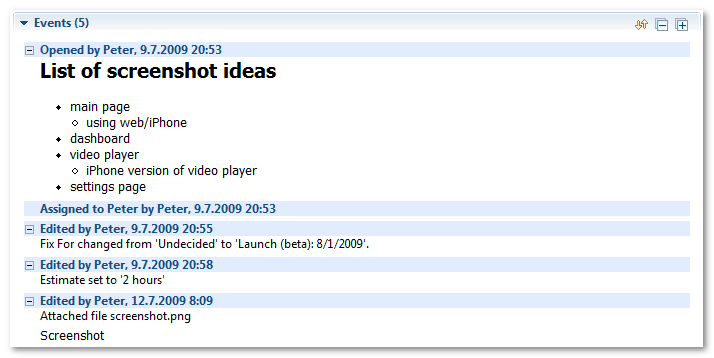
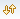

Case Editor: Events
Events section is the most important part of case editor. This section displays complete history of what happened to this particular case since it was opened. All changes to attributes, incoming emails, attached files, everything is recorded here.

By default, events are ordered from latest at the top, to newest at the bottom. To change the ordering, press  button.
New events since case was last viewed in case editor are marked with blue background in the title, and expanded. Old events are collapsed by default, but can be expanded by clicking button. All events can be expanded by using button.
Comment on the screenshot has some extended formatting, which is possible thanks to WikiText component of Mylyn. Learn more about WikiText integration in Foglyn
Related Topics: